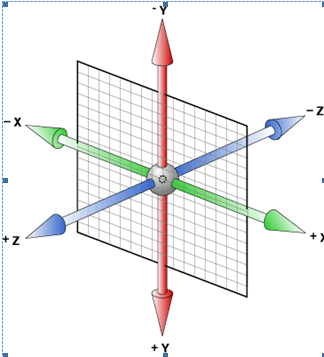

3D转换
1、3D坐标轴
用X、Y、Z分别表示空间的3个维度，三条轴互相垂直。如图

2、透视（perspective）
电脑显示屏是一个2D平面，图像之所以具有立体感（3D效果），其实只是一种视觉呈现 ，通过透视可以实现此目的。
透视可以将一个2D平面，在转换的过程当中，呈现3D效果。（没有perspective，便“没有”Z轴）
并非任何情况下需要透视效果
3、perspective有两种写法
a) 作为一个属性，设置给父元素，作用于所有3D转换的子元素
b) 作为transform属性的一个值，做用于元素自身 ，并且必须要写在最前面
4、3D呈现（transform-style）
设置内嵌的元素在 3D 空间如何呈现，这些子元素必须为变形原素。
flat：所有子元素在 2D 平面呈现
preserve-3d：保留3D空间
所有的子元素必须要应用3D转换才可以
5、backface-visibility属性
设置元素背面是否可见
需要详细分析透视原理的可以去看张鑫旭的博客
动画
简介:动画是CSS3中具有颠覆性的特征之一，可通过设置多个节点来精确控制一个或一组动画，常用来实现复杂的动画效果。
1、必要元素：
a、通过@keyframes指定动画序列；
b、通过百分比将动画序列分割成多个节点；
c、在各节点中分别定义各属性
d、通过animation将动画应用于相应元素；
2、关键属性
@keyframes 规定动画。
animation 所有动画属性的简写属性，除了 animation-play-state 属性。
animation-name
规定 @keyframes 动画的名称。
animation-duration
规定动画完成一个周期所花费的秒或毫秒。默认是 0。
animation-timing-function
linear 动画从头到尾的速度是相同的。
ease 默认。动画以低速开始，然后加快，在结束前变慢。
ease-in 动画以低速开始。
ease-out 动画以低速结束。
ease-in-out 动画以低速开始和结束。
cubic-bezier(n,n,n,n) 在 cubic-bezier 函数中自己的值。可能的值是从 0 到 1的数
animation-delay
规定动画何时开始。默认是 0。
animation-iteration-count
规定动画被播放的次数。默认是 1。
animation-direction
规定动画是否在下一周期逆向地播放。
normal 默认值。动画应该正常播放。
alternate 动画应该轮流反向播放。
animation-play-state
规定动画是否正在运行或暂停。
paused 规定动画已暂停。
running 默认 规定动画正在播放。
animation-fill-mode
规定对象动画时间之外的状态。
参数值的顺序：
关于几个值，除了名字，动画时间，延时有严格顺序要求其它随意
|
|